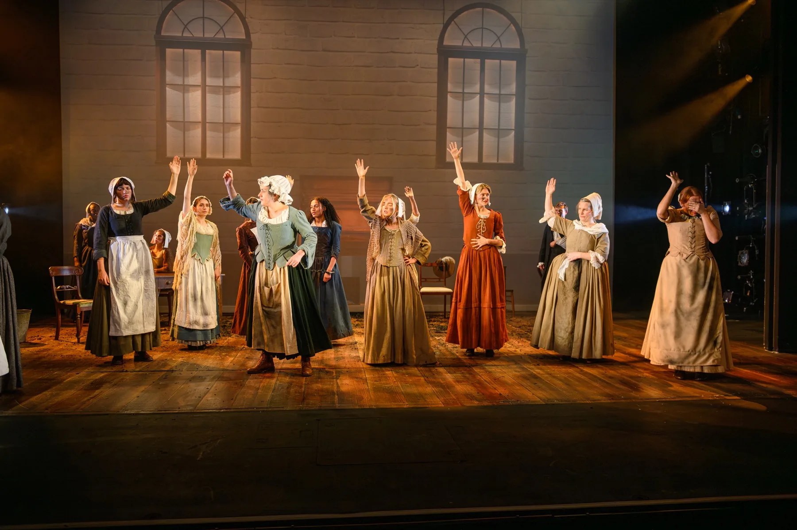

Production Electrician
The Welkin
Photos by David Monteith-Hodge (@photographise)
My role
Production Electrician
I designed and built custom wireless candles using ESP32-C3s. These received unicast sACN from a private network. The ESP32 processors also handled battery management and safety of a mini 3.7v Li-ion cell.
Production Planning
-
One of the practicals requested by the designer is a fireplace with different functionalities: a small fog generator and some pixel tape to light up the fog.
I decided to enclose this in a DIN rail enclosure, using a pixel driver for the LED tape and ESP32 to control a relay for the fog. I designed this all in VWX before building the enclosure.
-
Another practical request was to have wireless candles that could be turned off and on remotely.
There were no solutions out there that would fit into an LED candle enclosure, so I embedded a lithium-ion cell and an ESP32-C3 into the body, with the ESP32-C3 controlling a small 3V LED originally used by the candle.
The C3 had inbuilt functionality to handle the lithium-ion battery management, so the candles could be programmed and charged by a single USB-C port. You can see them in action in the show photos below.
-
All the HoDs on this show agreed on a central network and I was tasked with creating a base network.
I settled on using multiple switches for each department, with different VLANs for each department and use-case, with a Cisco router providing specific non-critical services for designers. I also had a main server running as a hypervisor, running show recording services for designers and DNS discovery between different VLANs.
One main benefit with this layout is we could route unicast traffic between VLANs without having multicast leaks with the multiple different protocols that each department would be using.
One example of this unicast traffic routing is multiple designers wanted different information, like specific NDI cameras they wanted to view, so we deployed an NDI Discovery server so that we could route NDI traffic without saturating other production-critical services. I also hosted a networking teaching session where we used the switches that were going to be deployed to teach the other HoDs how to safely configure the network devices in a network at this level of complexity.